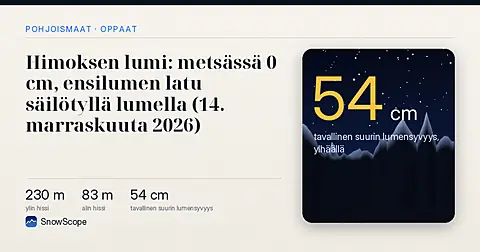
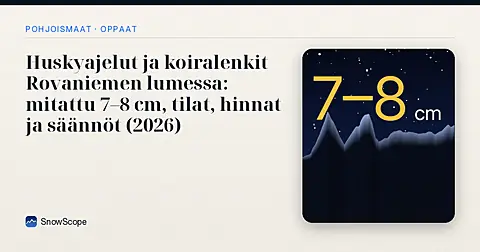
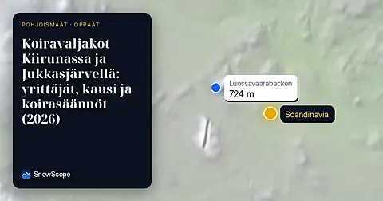
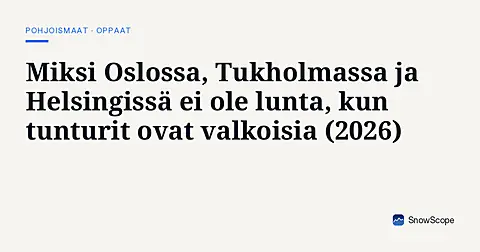
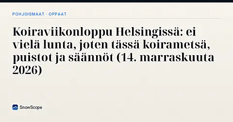
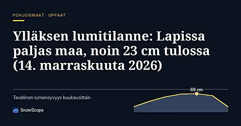
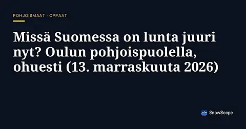
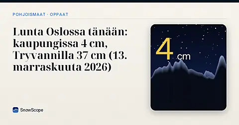

Lumiraportit · marraskuu 2026
Päivittäiset lumiraportit laskijoille: missä lunta on, mitä on tulossa ja missä kannattaa laskea, SnowScopen lumikartasta ja mittausasemilta. Jokainen luku tulee päivän tiedoista.



Himos avaa valmiin hiihtosilmukan 14. marraskuuta, kun luonnonlumi puuttuu edelleen metsän pohjalta tämän suomalaisen hiihtokeskuksen ympäristöstä.

Røros sijaitsee 630 m korkeudella vuoristolaakealla. 13. marraskuuta säähavaintoasemalla mitattiin 11 cm lunta—ohut mutta oikea talvilumi koiravaljakkokauden alkuun.

Vuokatin lumitilanne marraskuun puolivälissä 2026: Sotkamon asemilla mitattiin 13. marraskuuta 0 cm, Kajaanissa 1 cm; tälle viikolle ennustetaan noin 9 cm, osin vetenä; rinteet aiotaan avata 4. joulukuuta. 46 mennyttä talvea.

Tahko avautuu tekonlumella kun luonnonlumi sulaa. Odotettavissa 7–8 cm ensi viikolla; sade ja märkä lumi todennäköisiä. Vain 2 hissiä käynnissä nyt.

Rovaniemelle tuli ensimmäinen lumi 13. marraskuuta: 7–8 cm maanpinnalla. Tässä on tiedot koiratilain hinnoista, avautumisajoista ja turvallisista koirakävelyistä arktisella alueella.

Kirjunan kaupungissa oli 0 cm lunta 13. marraskuuta. Koiravaljakon ajajat toimivat ohuen alkukauden lumen kanssa. Mitä sinun tulee tietää kierroksista ja paikallisista säännöistä.

Saariselkällä mitattiin 4 cm lunta asemalla 13. marraskuuta. Seuraavalle viikolle on ennustettu noin 22 cm. Tavallinen lumensyvyys kohteessa Saariselkä 14. marraskuuta on 17 cm.

13. marraskuuta 2026 Tukholman ja Helsingin sääasemilla mitattiin 0 cm lunta, kun Sälenissä oli 45 cm ja Uumajassa 20 cm. Selitys löytyy korkeudesta, merestä, kaupungista ja myrskyjen reitistä, ja 46 mennyttä talvea tukee sitä.

Lumi on ohutta ja epätasaista Pyhä-Luostossa 13. marraskuuta, mutta seuraavien seitsemän päivän aikana ennustetaan jopa 23 cm lunta kaikilla korkeuksilla.

Käytännön opas koiravaljakkoajeluihin Tromssan ympäristössä talvella 2026–27: matkailutoimiston listaamat huskytilat, lumikauden alku, ajelun hinta, kaamos ja säännöt oman koiran lenkitykseen lumella ja porojen lähellä.

Helsinki koiranomistajille tänä viikonloppuna: perjantaina kaikilla viidellä kaupungin asemalla mitattiin 0 cm lunta. Östersundomin koirametsä, lähes sata koira-aitausta, latujen säännöt ja harmaa, leuto viikonloppu.

Tampereen koiranomistajat, viikonloppu 14. marraskuuta 2026: kaupungin ympärillä 0 cm lunta perjantaina, lauantaina häivähdys märkää lunta. Kaupungin koirapuistot, kytkentäsäännöt ja mitä latusäännöt tarkoittavat, kun lumi tulee.

Ylläksen lumitilanne marraskuun puolivälissä 2026: Ylläksen ympäristön sääasemilla mitattiin 13. marraskuuta 0–2 cm, selvästi alle normaalin; tälle viikolle ennustetaan noin 23 cm lunta ilman sadetta, ja rinteet aiotaan avata 21. marraskuuta.

Mitattu lumi Oulussa 13. marraskuuta 2026: Kaukovainiolla 7 cm, Hailuodossa 5 cm, Ruukissa 8 cm, kaikki torstain jälkeen satanutta. Vähän lisää tulossa ennen maanantain suojasäätä.

Rovaniemella on 13. marraskuuta 7–8 cm lunta, ja viikonlopulle on ennustettu 5 cm lisää. Ohut mutta tasainen napapiirillä.

Tampere 13. marraskuuta 2026: Tottijärvellä ja kaupungin ympäristön asemilla 0 cm, koillisessa Hyytiälässä 2 cm. Puolessa talvista Tampere oli valkoinen 10. marraskuuta mennessä. Lauantaina häivähdys märkää lunta.

Suomen lumi 13. marraskuuta on Oulun pohjoispuolella: 7–8 cm Rovaniemen seudulla, mutta paljas maa etelässä, jossa Helsinki mittasi 0 cm kaikilla asemilla.

Helsinki mittasi 0 cm kaikilla asemilla 13. marraskuuta. Lumi saapuu yleensä marraskuun loppuun, mutta tänä viikonloppuna odottaa vain tihku ja sade.

Mitattu lumensyvyys Oslossa 13. marraskuuta 2026: Blindernissä 4 cm, Bjørnholtissa 31 cm ja Tryvannshøgdalla 37 cm. Miltä tavallinen marraskuun puoliväli näyttää ja mitä viikonloppu tekee lumelle.

Oslo ja Umeå johtavat 14 pohjoismaidemkaupunkia lumella 13. marraskuuta: 37 cm Oslon yläpuolella, 20 cm Umeåssa. Kiruna ja eteläiset pääkaupungit ovat paljaat.